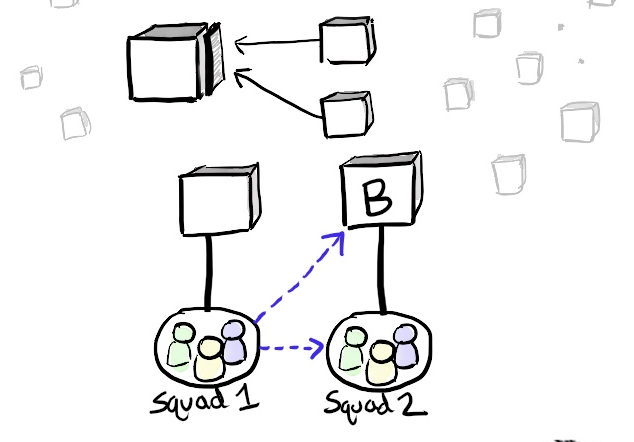
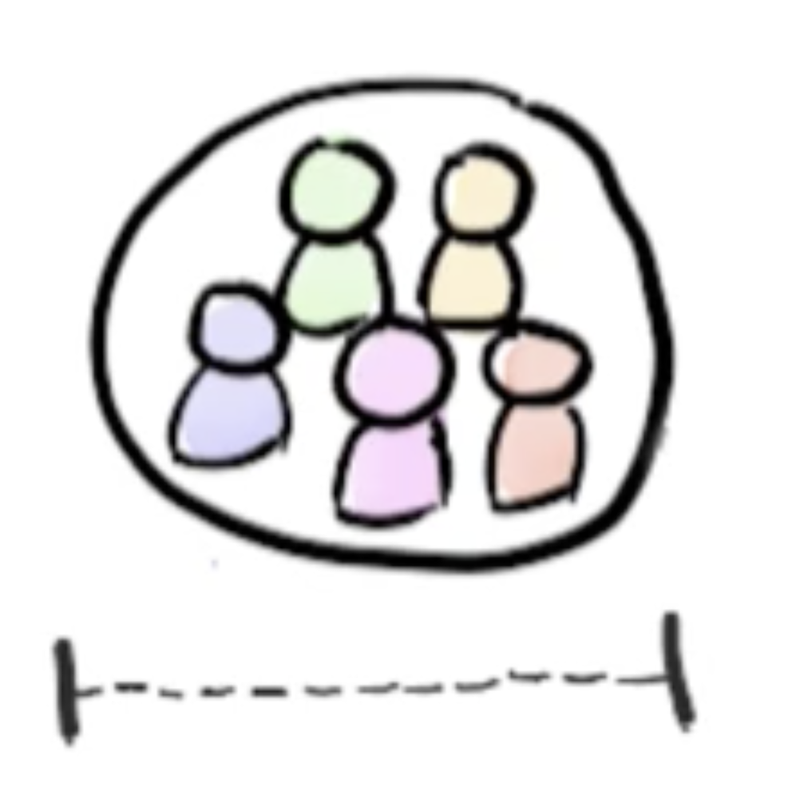

3 Razões Porque O Modelo Do Spotify Não Serve Para Você
Thiago Soares
e Raphael Molesim
Gráfico de Confiança, Suécia
David Anderson
Fundado em 2006
Começar sem usar nada (Usavam basicamente Scrum)
Primeiro player foi para o ar em 2010
Haviam entre 13 e 15 Scrum Teams
Por volta de 2012 já eram mais de 50 Times
Perceberam que apenas Scrum não fazia sentido
"...This has come to be known as the “Spotify Model” in the agile world, although it wasn't actually intended to be a generic framework or “model” at all. it's just an example of how one company works."
Henrik Kniberg
"...The reason why I shared this material is because my Spotify colleagues encouraged me to, and because, well, that's what I do – help companies improve, by learning stuff and spreading knowledge."
Henrik Kniberg
"...Since then, many companies have been “copying” the "Spotify model", which I found rather scary at first. But now I've met quite a number of those companies (and heard back from even more)"
Henrik Kniberg
There is no such thing as The Spotify Model, and even if there was, it wouldn't be for everyone!
Spotify é uma empresa que nasceu com o DNA ágil
Autonomia, confiança, empoderamento e liderança servidora nunca foram novidades para eles
Aí você olha para a estrutura na sua empresa e vê algo assim:
Imagine para criar uma fake page desassociada da marca da empresa, e colocar em produção para validar uma hipótese?
Se a cultura organizacional na sua empresa está baseada em:
Hierarquia forte
Comando e controle
Relações políticas
Será que criar squads vai mudar algo?
Exitem questões culturais que precisam ser endereçadas antes, mudar a estrutura não é o bastante!
Internal Open Source Culture

Muito bonito isso aí!
E como realmente funciona na sua empresa?
Como funciona a tomada de decisão arquitetural?
Arquitetura evolutiva?
Revisão arquitetura com o objetivo de facilitar a manutenabilidade e desenvolvimento de novas funcionalidades?
Como são tratadas as dependencias dentro da empresa?
Times enablers?
Quando existem dependência como a empresa trata isso?
Como são as implantações em produção?
A sua empresa colocar código não terminado em produção?
Orquestração big bang ou entregas pequenas e frequentes?
E não vai ser tratando TI como comódite que você vai chegar lá.
Para Spotify terceiros é exceção, está na estratégia deles que TI é o core business deles.
Cultura de Engenharia
(Spotify Engineering Culture)
Se você não tem isso, você precisa olhar isso antes de começar a falar de squads.
2006... Spotify é um único produto.
Responsabilidade de ponta a ponta

Quanto anos tem a sua empresa?
10? 20? 30? 70?
Codigo legado? PL/I, Cobol, Fortran de 40 anos
Quantos produtos a sua empresa tem?
1? 5? 3? 25? 50?
Complexidade, cadeias de valores enormes
Quando pessoas são envolvidas no processo de desenvolvimento de ideia até a entrega em produçåo.
10? 15? 20? 30? 40?
A complexidade do Spotify é muito menor, o modelo de spotify foi criado de forma emergente para o problema do Spotify.
A complixidade neste caso está em outra ordem de grandeza.
Você terá de encontra por sí mesmo.
Copie a cultura do Spotify e não a sua estrutura
Kniberg, H. - No, I didn’t invent the Spotify model, Henrik Kniberg, visitado em 19/08/2017, http://blog.crisp.se/2015/06/07/henrikkniberg/no-i-didnt-invent-the-spotify-model